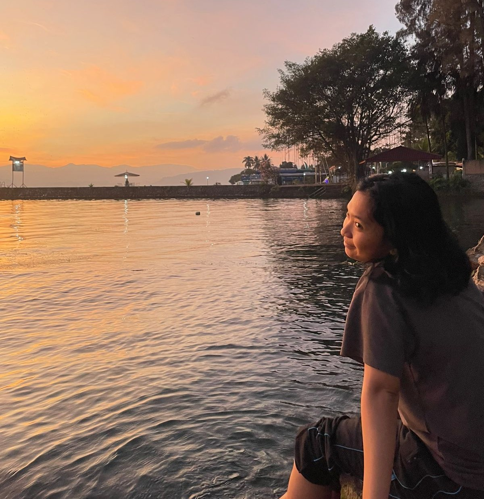

Curriculum Vitae
Lola Gracea Apriana Tampubolon
|

|
Tentang SayaSaya adalah individu yang antusias di bidang teknologi informasi, khususnya dalam pemrograman, pengembangan web, dan analisis sistem. Terbiasa bekerja dengan logika, teliti dalam menyelesaikan masalah, serta memiliki keinginan kuat untuk terus belajar teknologi terbaru agar dapat memberikan solusi yang inovatif. Kontak
|
Pendidikan
- 2020 — 2024 — S1 Informatika, Institut Teknologi Contoh (GPA: 3.75)
- 2017 — 2020 — SMA Negeri 1 Contoh, Jurusan IPA
- 2014 — 2017 — SMP Negeri 2 Contoh
Pengalaman
-
2023 — Sekarang — Junior Web Developer, PT Contoh Teknologi
Tanggung jawab: membuat dan memelihara website, berkolaborasi dengan tim desain, menguji fitur baru. -
2021 — 2022 — Asisten Laboratorium, Laboratorium Komputer IT Contoh
Tanggung jawab: membantu praktikum, memelihara perangkat lunak & dokumentasi. -
2020 — Ketua Komunitas Coding Kampus
Tanggung jawab: mengorganisir kelas, workshop, dan hackathon kecil.
Keahlian
- Bahasa Pemrograman: HTML, CSS, JavaScript, Python
- Framework / Tools: React (dasar), Git, Bootstrap
- Database: MySQL, SQLite
- Soft skills: komunikasi, manajemen waktu, kerja tim
Sertifikat
- 2024 — Sertifikat Pemrograman Web (Platform Contoh)
- 2023 — Pelatihan Data Science Dasar (Platform Contoh)
- 2022 — TOEFL ITP (Score: 550)
Portfolio
- Website Portofolio — https://contoh-portfolio.com
Deskripsi singkat: Website personal berisi proyek-proyek web. - Aplikasi Martabak Seller (Simulasi) — link-proyek-2
Deskripsi singkat: Simulasi manajemen pesanan dan penjadwalan. - Proyek Skripsi — link-skripsi
Deskripsi singkat: Judul skripsi dan ringkasan 1-2 kalimat.
Bahasa
- Bahasa Indonesia — Lancar
- Bahasa Inggris — Menengah (TOEFL 550)
Dibuat: Tanggal — Jika perlu, ganti konten ini dengan data asli kamu.